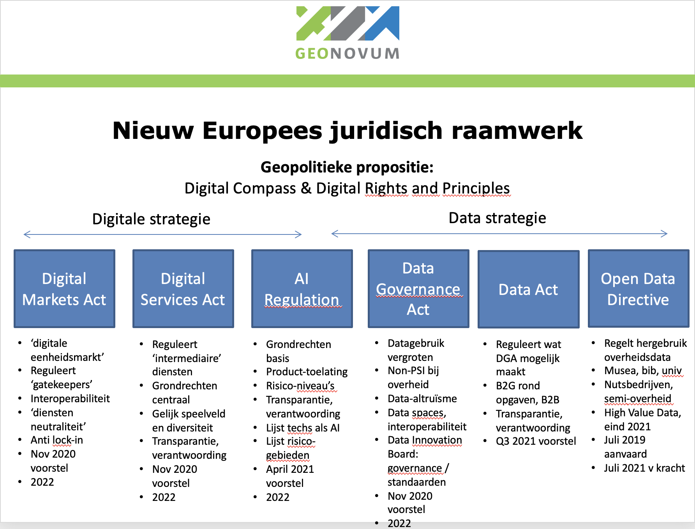

Creative Commons Attribution 4.0 International Public License (CC-BY)
Samenvatting
De Europese Commissie (EC) heeft meerdere wetsvoorstellen m.b.t. digitalisering en data gedaan die de komende jaren vorm krijgen. Gezamenlijk vormen ze de geopolitieke positionering t.a.v. digitalisering en data van de Europese Unie (EU). Centraal in die propositie is het benutten van de maatschappelijke waarde van digitalisering en data, en gelijktijdig het versterken en beschermen van de individuele rechten van burgers.
De voorstellen zijn in 2020 en 2021 gedaan, en zijn momenteel in onderhandeling. De bekend gemaakte feitelijke informatie over de inhoud van de voorstellen, de activiteiten van de EC, en de bekende tijdslijnen t.a.v. implementatie worden hier gedeeld. De bedoeling is dat iedere betrokkene in Nederland zich hier makkelijk kan informeren, en tegelijkertijd materiaal vindt dat in de eigen organisatie kan worden hergebruikt.
Status van dit document
Deze paragraaf beschrijft de status van dit document ten tijde van publicatie. Het is mogelijk dat er actuelere versies van dit document bestaan. Een lijst van Geonovum publicaties en de laatste gepubliceerde versie van dit document zijn te vinden op https://www.geonovum.nl/geo-standaarden/alle-standaarden.
Dit is een werkversie die op elk moment kan worden gewijzigd, verwijderd of vervangen door andere documenten. Het is geen door de werkgroep goedgekeurde consultatieversie.
Versiebeheer
De informatie in dit document is niet gegarandeerd correct of actueel.
Dit document is aan verandering onderhevig.
1. Inleiding
Dit is een handreiking met informatie over de aankomende Europese Verordeningen en Richtlijnen rond de Digitale Strategie en de Data Strategie. De EC heeft meerdere voorstellen voor wetgeving gedaan die tot in 2022 zullen worden onderhandeld met het Europees Parlement (EP) en de Lidstaten (MS), en waarschijnlijk van 2024 gehandhaafd zullen worden.
Nu is de gelegenheid om met datahouders en datagebruikers in Nederland pro-actief te kijken naar de kansen en mogelijke obstakels die in die voorstellen schuilen:
om met goede gebruikscasussen invloed uit te oefenen op hoe de nieuwe regels vorm krijgen en straks worden geïmplementeerd, en
om te zorgen dat je straks ook zelf wilt wat je straks moet, omdat je al weet hoe de nieuwe regels helpen de eigen beleids- en organisatiedoelstellingen te behalen.
Om met datahouders binnen de Nederlandse overheid actief naar de kansen en obstakels van de Europese voorstellen te kijken is het Tactisch Beraad EU Informatie (TB), onderdeel van het GI-Beraad, eind 2020 opgericht. In het Tactisch Beraad zorgen de deelnemers voor de terugkoppeling over de Europese ontwikkelingen waar zij bij betrokken zijn. Aan het beraad kunnen vraagteams worden gekoppeld om specifieke vraagstukken concreet uit te werken. De handreiking die u nu leest is gemaakt door Geonovum voor het Tactisch Beraad EU Informatie (zie ook hieronder bij Proces).
1.1 Doelgroep
Deze informatie is bedoeld voor overheden die data houden, voor niet-overheden die (overheids)data gebruiken of zouden willen gebruiken, en voor alle betrokkenen rond maatschappelijke opgaven die met data werken.
1.2 Leeswijzer
Deze pagina's brengen de actueel bekende feitelijke informatie over de data-gerelateerde Europese regelgeving bijeen, met verwijzingen naar de bron. De informatie wordt verstrekt zonder garantie compleet, juist, actueel of definitief te zijn. Alle informatie op deze pagina's heeft per definitie een voorlopige status.
1.3 Het proces
Het Tactisch Beraad EU Informatie en Geonovum houden voor de stand van de ontwikkelingen rond Europese regelgeving m.b.t. data bij voor eigen gebruik en voor ons netwerk. Om ons netwerk van dienst te zijn delen we die informatie ook hier, zodat deze informatie kan worden hergebruikt. Wanneer onze eigen informatie wijzigt, passen we ook de informatie op deze pagina's zo spoedig mogelijk aan. Wilt u wijzigingen of suggesties doorgeven neem dan contact via inspire@geonovum.nl.
2. EU neemt geopolitieke positie in
De EU neemt m.b.t. de rol van digitalisering en data een geopolitieke positie in.
Die positie richt zich tegelijkertijd op het maximeren van maatschappelijk nut van digitalisering en datagebruik en het beschermen en versterken van de individuele rechten van mensen.
Dit in contrast tot uitgangsposities elders in de wereld die bijvoorbeeld eenzijdig gericht zijn op waarde extractie of op het centraliseren van controle. Daarmee is het ook een propositie van de EU aan de wereld, een uitnodiging op gelijksoortige manier als de EU naar digitalisering en data te kijken.
Die geopolitieke propositie wordt in uitgangspunten, en twee strategieën met daaronder een aantal wetten vaste vorm gegeven. Onderstaande afbeelding geeft hiervan een overzicht. In de rest van deze handreiking wordt elk van de elementen nader beschreven.

2.1 Digital Compass en Digital Rights and Principles
De uitgangspunten voor de geopolitieke propositie zijn vastgelegd in het EU Digital Compass en de EU Digital Rights and Principles (bron).
De Europese visie op digitale transformatie zet de mens centraal, wil individuen handelingsvermogen geven, en innovatieve bedrijven aanmoedigen.
De Europese vorm van digitale transformatie wil digitale soevereiniteit, inclusiviteit, gelijkheid, duurzaamheid, veerkracht, veiligheid, vertrouwen, levenskwaliteit, respect voor burgerrechten en menselijke aspiraties omvatten, en wil bijdragen aan een dynamische eerlijke maatschappij en economie.
Het EU Digitaal Compass geeft vier assen aan waarvoor doelstellingen per 2030 zijn geformuleerd.
Die vier assen zijn:
Een digitaal vaardige bevolking, en zeer vaardige digitale professionals
Veilige, goed presterende en duurzame digitale infrastructuren
In de EU Digital Rights and Principles wordt beschreven hoe die grondrechten en de Europese waarden toegepast moeten worden in de digitale wereld. Het dient als referentie voor bedrijven en andere actoren in het ontwikkelen en implementeren van technologie. Het is ook een gids voor beleidsmakers. De implementatie van deze rechten en principes is een verantwoordelijkheid van zowel de EU als van Lidstaten. In het jaarlijkse rapport 'State of the Digital Decade' wordt de monitoring van de digitale principes en rechten opgenomen.
2.1.1 Rechten
Recht op onderwijs, training en levenslang leren
Recht op eerlijke, gezonde en veilige werkomstandigheden, en passende bescherming in de digitale werkomgeving zoals ook op de fysieke werkplek, ongeacht werknemerstatus, werkvorm of arbeidsduur. Dit betekent ondermeer de mogelijkheid om offline te gaan, en het bewaken van werk-prive balans in de digitale omgeving.
Recht op vrijheid van meningsuiting online, zonder angst voor censuur of intimidatie
Recht op de bescherming van persoonsgegevens online, inclusief het recht op hoe iemand's data wordt gebruikt en met wie die wordt gedeeld (zie de AVG)
Recht op de vertrouwelijkheid van communicatie (digitaal briefgeheim) en van gegevens op digitale apparaten, en recht niet te worden onderworpen aan wederrechtelijke surveillance of afvangactiviteiten.
2.1.2 Beginselen
Universele toegang tot technologie die verbindt en mensen niet van elkaar verwijdert. Dit betekent:
Zorgen dat technische oplossingen burgerrechten respecteert, de uitoefening van die rechten mogelijk maakt, en inclusiviteit uitdraagt
Zorgen dat ouderen, mensen met een beperking, gemarginaliseerden, kwetsbaren en ontrechten niet worden achter gelaten
Zorgen voor randvoorwaarden waardoor alle marktpartijen hun sociale verantwoordelijkheden nemen en naar vermogen bijdragen aan publieke goederen, diensten en infrastructuur
Universele toegang tot betaalbare digitale verbindingen van hoge snelheid, en internetneutraliteit
Universele digitale vorming en vaardigheden zodat mensen een actieve rol in de maatschappij kunnen nemen
Universele online toegang tot alle belangrijke publieke diensten. Niemand zou meer data moeten worden gevraagd dan noodzakelijk voor toegang en gebruik van digitale publieke diensten. Dit betekent een toegankelijke, veilige en betouwbare digitale identiteit, brede toegang tot en hergebruik van overheidsinformatie, en naadloze veilige interoperabele toegang tot digitale zorgdiensten in de hele EU
Toegang tot de voordelen van het gebruik van AI, op basis van eigen geïnformeerde keuzes, en bescherming tegen risico's m.b.t. gezondheid, veiligheid en fundamentele rechten. (UItgewerkt in de AI Verordening) Dit betekent:
Transparantie in het gebruik van AI en algoritmen, en het actief informeren van mensen die hiermee te maken krijgen.
Zorgen dat algoritmes gebaseerd zijn op geschikte datasets, om onwettelijke discriminatie tegen te gaan, en menselijke supervisie mogelijk te maken op uitkomsten die mensen raken.
Zorgen dat algoritmes en AI niet worden gebruikt om mensen keuzes op te leggen m.b.t. bijvoorbeeld gezondheid, onderwijs, werk, en in hun priveleven.
Zorgen voor vereisten waardoor AI en digitale systemen veilig zijn en mensen- en burgerrechten volledig respecteren.
Vrije keuze in online diensten, gebaseerd op objectieve, transparante informatie. Dit betekent ondermeer eenvoudig persoonlijk gegevens mee kunnen nemen naar een andere online dienst (data-portabiliteit)
Toegang tot betrouwbare, diverse en meertalige online omgevingen. Diversiteit in content draagt bij aan een pluralistisch publiek discours, en maakt brede deelname aan democratie mogelijk. Dit betekent ondermeer desinformatie en illegale content tegengaan, zonder het recht op meningsuiting aan te tasten en zonder algemene monitoring verplichtingen
Mogelijkheid voor iedereen om te kunnen achterhalen wie de media die ze benutten bezit of bestuurt.
Universele toegang tot digitale diensten die veilig en privacybeschermend zijn by design. Dit betekent ondermeer het beschermen van digitale identiteiten tegen identiteitsfraude.
Universele digitale wilsbeschikking t.a.v. wat met publieke digitale informatie na iemands dood moet gebeuren.
Toegang tot heldere informatie over de milieu-impact en het energieverbruik van digitale producten en diensten, om verantwoorde keuzes mogelijk te maken.
Kinderen en jongeren verdienen zowel bescherming als de mogelijkheid tot vrije keuze en expressie online
Deze rechten en uitgangspunten waren in de zomer van 2021 onderwerp van een publieke consultatie. De EC heeft op 26 januari 2022 de inhoud van de digitale rechten en principes voorgesteld, met de uitnodiging aan de Raad en het EP deze mede te ondertekenen.
2.2 Twee strategieën als bouwstenen
Twee strategieën zetten deze propositie om in praktijk en regelgeving:
De Europese Digitale Strategie mikt op successen in digitale transformatie in de jaren tot 2025.
Er zijn drie juridische instrumenten door de EC voorgesteld als onderdeel van de Digitale Strategie:
De Digital Markets Act (DMA, Digitale Marktenverordening), gericht op zogenaamde 'gatekeepers' / poortwachters met een dominante positie;
De Digital Services Act (DSA, Digitale Dienstenverordening), gericht op alle intermediaire digitale dienstverleners (inclusief de 'gatekeepers');
De AI Regulation (AI verordening), gericht op de toelating van AI producten.
3.1 Digital Markets Act (DMA)
De Digital Markets Act (DMA, Digitale Marktenverordening) is voorgesteld eind 2020. Als Verordening is de DMA direct van kracht in alle lidstaten, zodra deze wordt aangenomen (naar verwachting eerste helft 2022).
Gericht op open en eerlijk digitale markten
Richt zich op 'gatekeepers' / poortwachters, d.w.z. grote online platforms, netwerk providers, hostingbedrijven. De wet geeft regels t.a.v. de beslismacht die poortwachters hebben over het toelaten van andere dienstenaanbieders.
Een poortwachter is gedefinieerd als
Een platform met een sterke economische positie, met een significante impact op de EU markt, en actief in meerdere EU lidstaten.
Een platform met een sterke intermediaire positie, d.w.z. verbindt een grote groep gebruikers met een groot aantal bedrijven.
Heeft, of heeft bijna, een bestendige en in de tijd stabiele marktpositie
Gericht op het vergroten van de diversiteit van aanbod op de platformen van poortwachters, niet op het hinderen van de innovatiekracht van die gatekeepers zelf
Stelt verplichtingen voor poortwachters, waaraan ze in hun dagelijkse operatie aan moeten voldoen, t.a.v.:
3rd party interoperabiliteit met de diensten van poortwachters in verschillende situaties
toegang voor bedrijven tot de data die genereren met het gebruik van het platform van poortwachter
bedrijven die adverteren en adverteerders moeten de instrumenten en gereedschappen krijgen om zelf onafhankelijk na te gaan welke advertenties hoe worden getoond door de poortwachter
bedrijven moeten in staat zijn hun aanbod en contracten ook buiten het platform van poortwachter aan consumenten aan te bieden
poortwachters mogen niet hun eigen diensten bevoordelen op het platform t.o.v. andere aanbieders
poortwachters mogen consumenten niet hinderen om buiten het platform om met een aanbieder in verbinding of contact te treden.
poortwachters mogen consumenten niet hinderen voorgeïnstalleerde applicaties (op telefoons en tablets bijv.) te deïnstalleren.
Bevat sancties die lijken op die van de AVG:
Boetes mogelijk tot 10% van de wereldwijde omzet van een poortwachter
Dwangsommen mogelijke tot 5% van de gemiddelde wereldwijde dagomzet van een poortwachter.
De DMA is in november in de Raad van EU Ministers goedgekeurd en eveneens door het Europees Parlement. In de eerste helft van 2022 wordt nog onderhandeld tussen Raad, EP en EC over de eindtekst.
De DMA zal in 2022 gereed zijn en per 1-1-2023 van kracht zijn.
3.2 Digital Services Act (DSA)
De Digital Services Act (DSA, Digitale Dienstenverordening) hangt nauw samen met de Digital Markets Act (DMA), en is net als de DMA eind 2020 voorgesteld. Het is een uitbreiding en actualisering van de EU E-commerce Directive 2000/31/EU. Die bestaande Richtlijn wordt hiermee vervangen door een Verordening en trekt zo de regels en interpretatie voor alle Lidstaten gelijk. Als Verordening is de DSA direct van kracht in alle lidstaten, zodra deze wordt aangenomen.
Gericht op een veilige digitale ruimte waarin de (grond)rechten van alle gebruikers van digitale diensten beschermd zijn.
Eist transparantie en verantwoording van digitale dienstverleners.
Gericht op een gelijk speelveld waarin innovatie, concurrentie en groei mogelijk zijn. Dit niet alleen binnen de EU, maar wereldwijd.
Bevat sancties die lijken op die van de AVG.
Het begrip digitale diensten omvat veel verschillende zaken. Denk aan online markten, social media, content-sharing platforms, app stores, online boekingen.
Doorgeefdiensten, die door gebruikers verstrekt informatie in een communicatienetwerk doorgeven, of toegang verstrekken tot een communicatienetwerk
Cachingdiensten, die bij het doorgeven van informatie in een communicatienetwerk deze deels en geautomatiseerd tussentijds tijdelijk opslaan, met als doel latere doorgifte.
Hostingdiensten, die opslag bieden voor informatie van door de gebruiker verstrekte informatie
Online platforms, gezien als een bijzondere vorm van hostingdiensten, die informatie verspreiden aan het publiek
Zulke intermediaire diensten krijgen verplichtingen opgelegd die moeten leiden tot:
Meer keuze en lagere prijzen voor consumenten
Minder illegale content
Betere bescherming rechten van consumenten / burgers
Juridische zekerheid en geharmoniseerde regels voor dienstverleners
Makkelijker starten en schalen van diensten in de EU
EU brede markttoegang voor dienstverleners via online platforms
Meer democratische controle en toezicht over 'systeem' platforms door de maatschappij (zie ook de DMA)
Verzachting van maatschappelijke risico's van manipulatie en desinformatie
De voorgestelde verordening leest als een risicogerichte aanpak, en beschouwt de rol van platforms waar deze systemische risico's vormen voor markt en maatschappij. Het adresseert daarbij de invloed en macht van een platform, de rol van een platform als (maatschappelijke) infrastructuur, en de afhankelijkheden in het ecosysteem van aanbieders.
De DSA is door de Raad van EU Ministers in november 2021 goedgekeurd, en door het Europees Parlement in januari 2022. In de eerste helft van 2022 wordt tussen deze partijen onderhandeld over een definitieve tekst. Naar verwachting is de wet dan per 1-1-2023 van kracht.
3.3 AI Regulation
De AI Regulation (AI Verordening) is voorgesteld in april 2021. Net als de DMA en de DSA heeft de AI Regulation in de hele EU meteen kracht van wet als hij is aangenomen. De AI Regulation is wereldwijd het eerste wetsvoorstel in zijn soort. Net als de AVG, de DMA en DSA, is het vormgegeven als een instrument dat striktere eisen en grotere sancties koppelt aan hogere risiconiveau's.
De AI Regulation definieert toelatingseisen waaraan AI moet voldoen om in de Europese markt te mogen worden aangeboden of gebruikt.
De werking strekt zich uit over:
Providers van AI (gebruikende) systemen die in de EU op de markt worden gebracht
Gebruikers van AI (gebruikende) systemen
Providers en gebruikers van AI (gebruikende) systemen waarvan de uitkomsten worden gebruikt in de EU.
Hiermee richt het zich niet alleen op partijen die in de EU gevestigd zijn.
Onder AI wordt verstaan wat op een telkens aan te passen lijst van technieken en methoden staat. Bij publicatie van het voorstel staan de volgende technieken daar op:
Machineleren aanpakken ((un)supervised learning, reinforcement learning, deep learning)
Logica en kennisgebaseerde aanpakken (knowledge representation, inductive (logic) programming, knowledge bases, inference and deductive engines, (symbolic) reasoning and expert systems)
Statistische aanpakken (Bayesian estimation, search and optimization methods)
De afweging van risico's van AI toepassingen worden gemaakt t.o.v. de mate waarin het individuele rechten of de veiligheid aantast. Toepassingen worden ingedeeld in verboden toepassingen, hoog-risico toepassingen en overige toepassingen.
Verboden toepassingen zijn onbewuste beïnvloeding van het gedrag van mensen dat hen of anderen psychische of lichamelijke schade kan bezorgen, het misbruiken van kwetsbaarheden van een groep of persoon op basis van leeftijd of beperking, toepassingen door overheden voor een zgn. sociale score, en algemene inzet van biometrische identificatie in de publieke ruimte voor opsporing.
Hoog risico-toepassingen worden genoemd op een aparte lijst. Die lijst is gesplitst naar toepassing in bepaalde apparatuur en naar gebruiksvormen. Apparatuur die nu in het voorstel in eerste genoemd instantie wordt:
machinerie
speelgoed m.b.t. veiligheid daarvan
vaartuigen, recreatievaartuigen
liften
omgang met explosieve middelen
radio apparatuur
apparatuur onder druk (gas, hydraulisch)
medische apparatuur
civiele luchtvaartuigen
voertuigen
agrarische en bosbouwmachines
zeewaardige vaartuigen en machines/installaties
spoor-interoperabiliteit
vrachtwagens en trailers
Gebruiksvormen die als hoog risico gelden zijn:
biometrische identificatie en categorisering van natuurlijke personen
management en gebruik van kritische infrastructuur (water, gas, warmte, electriciteit, verkeer)
toelating en assessment in educatie en beroepsopleidigen
werving, selectie, promotie en ontslag van werknemers
toegang tot sociale voorzieningen, en private diensten (toelating, uitkeringen, terugvorderingen, kredietwaardigheid, prioritering hulpdiensten)
opsporing
migratie en grenscontrole
openbaar bestuur en democratie
Aan hoog-risico toepassingen worden diverse eisen gesteld om te kunnen worden toegelaten op de markt:
een risicomanagementsysteem,als iteratief proces gedurende de hele levensduur van een AI systeem (dus niet alleen in de ontwerpfase), o.a. om risico's te identificeren en te voorkomen, en redelijkerwijs te verwachten misbruik te voorkomen.
toetsbaarheid (testen van correcte werking) binnen de bedoeling van de AI toepassing
zwaardere assessment eisen als de toepassing in contact komt met kinderen
opname van het risicomanagementsysteem in bestaande risicomanagementsystemen bij toepassingen voor kredietinstellingen
data en datagovernance eisen (bijv. statistisch relevante data nodig voor trainingssets), het gebruik van persoonsgegevens voor het voorkomen en corrigeren van vooroordelen in data (bias)
technische documentatie bij een product moet compliance met de AI regels aantonen
kunnen aantonen dat gedurende de gebruiksduur de AI toepassing correct werkt
eisen t.a.v. accuraatheid, robuustheid en veiligheid.
AI toepassingen die met eind-gebruikers interacteren moeten dat aan die gebruikers melden.
gebruik van emotie-herkenning en biometrische classificatie moet aan de betrokken personen worden gemeld
manipulatie van beelden en geluid moet worden gemeld in dat beeld of geluid
Providers, distributeurs en gebruikers van toepassingen moeten t.a.v. die eisen een actieve 'boekhouding' voeren als kwaliteitssysteem, en hebben een informatieplicht naar de overheid.
Elk land krijgt een AI toezichtsorgaan, analoog aan de Autoriteit Persoonsgegevens in AVG, en er gelden meldingsplichten. Er komt een Europese AI board die ook Europese instellingen kan beboeten.
Toegelaten hoogrisico-toepassingen krijgen voor maximaal 5 jaren een CE keurmerk, dat kan worden verlengd.
Van alle toegelaten hoogrisico toepassingen komt er een openbare Europese database.
Voor toepassingen met een lager risico wordt een code of conduct aangemoedigd.
Sancties volgen het patroon zoals dat in de AVG is gebruikt:
verboden toepassingen, en het niet voldoen aan data governance vereisten: 6% wereldwijde omzet of 30 miljoen Euro
andere schendingen van de regels: 4% wereldwijde omzet of 20 miljoen Euro
niet voldoen aan documentatievereisten: 2% wereldwijde omzet of 10 miljoen Euro
4. Europese Data Strategie
De Europese Data Strategie, begin 2020 voorgesteld, streeft naar een eenheidsmarkt voor de beschikbaarheid en het gebruik van data. De strategie is daarbij gericht op het wereldwijd concurrentievermogen van Europa en op datasoevereiniteit. Technisch wordt naar een pan-Europese dataspace (dataruimte) gestreefd om te zorgen dat er meer data beschikbaar komt voor socio-economisch gebruik, terwijl bedrijven en individuen die data genereren er wel zeggenschap over blijven houden. Die pan-Europese dataspace wordt opgebouwd met meerdere sectorale data spaces waarbinnen afspraken worden gemaakt over de omgang met data.
Binnen de Europese Data Strategie spelen drie juridische bouwstenen een rol:
de Data Governance Act (DGA, Data governance verordening)
de Data Act (DA, Data verordening)
de Open Data Directive (ODD, Open Data Richtlijn) met daarin opgenomen de High Value Data lijst
Verder wordt er geld beschikbaar gesteld om de benodigde infrastructuur, o.a. gefedereerde cloud-diensten te realiseren, en maatregelen getroffen om die cloud-diensten veilig, toegankelijk en competetief te houden.
De Europese Data Strategie bevat veel elementen die rechtstreeks voor datahouders in publiek relevante domeinen van belang zijn. Hieronder worden daarom de onderdelen van de Europese Data Strategie in losse hoofdstukken beschreven.
5. Data Governance Act (DGA)
De Data Governance Act (DGA, Data governance verordening) wil de hoeveelheid data die beschikbaar is voor (her)gebruik vergroten, door het vertrouwen in data-intermediairs te verstevigen, en de mechanismen om data te delen te versterken. Hierbij gaat het ondermeer om overheidsgegevens waar op enige manier rechten van anderen op rusten (en daarom buiten de scope van Open Data Directive vallen), om de uitwisseling van gegevens tussen bedrijven via intermediairs, en het gebruik van persoonsgegevens waarbij het uitoefenen van AVG-rechten door individuen makkelijk moet zijn. Ook wordt een nieuwe gebruikstoestemming geïntroduceerd, namelijk het toestaan van gebruik van (persoons)gegevens om altruïstische redenen.
Over de Data Governance Act is in november 2021 een akkoord bereikt tussen de EC, de Raad van EU ministers en het EP. Dit betekent dat deze naar verwachting medio 2022 van kracht wordt, waarna een verschoningsperiode ingaat van 15 maanden.
5.1 Hergebruik overheidsdata buiten de Open Data Directive
Hergebruik van overheidsdata die niet onder de Open Data Directive valt, wordt in deze Verordening geregeld. Dit betreft overheidsgegevens waarop commerciële of statistische vertrouwelijkheid rust, persoonsgegevens en gegevens waarvoor intellectueel eigendom van derden van toepassing is. Voorwaarden die veilig gebruik en eerlijke toegang regelen zijn van toepassing. Het is mogelijk om kosten in rekening te brengen voor hergebruik, maar daaraan zijn voorwaarden t.a.v. transparantie en uitlegbaarheid verbonden. Lidstaten dienen een of meer bevoegde organisaties aan te wijzen die de overheidsdatahouders ondersteunt t.a.v. techniek, verantwoord datagebruik, en het verwerken van aanvragen voor gebruik. Er dient een centraal informatiepunt te zijn waar iedereen de voorwaarden en kosten van gebruik kan vinden voor datasets, en waar iedereen aanvragen kan indienen.
5.2 Voorwaarden gesteld aan datadeeldiensten
Verschillende typen datadeeldiensten moeten een notificatieprocedure volgen. Dit betekent aanmelding bij een bevoegde organisatie, die dat moet doorgeven zowel aan de relevante Lidstaten als aan de EC. Een datadeeldienst mag data en bijbehorende metadata alleen gebruiken voor de datadeeldienst, niet voor andere doeleinden, en moet daarom in een aparte rechtspersoon zijn ondergebracht. Datadeeldiensten moeten gelijkelijk toegang bieden aan iedereen. Een aan te wijzen bevoegde organisatie houdt bij of datadeeldiensten aan hun vereisten voldoen, en kan maatregelen nemen als dat niet het geval is.
5.3 Data altruïsme
Data altruïsme is het geven van toestemming voor het gebruik van persoonsgegevens door individuen of van niet-persoonsgebonden gegevens door andere organisaties, voor het gebruik in het algemeen belang, zoals wetenschappelijk onderzoek of het verbeteren van publieke diensten. Een aan te wijzen bevoegde organisatie houdt een openbaar nationaal register bij van erkende gebruikers van via data altruïsme verkregen gegevens. Een dergelijk register wordt ook EU breed gevoerd. Alleen non-profit instellingen worden mogelijk erkend. Erkende instellingen moeten jaarlijks een activiteitenrapportage indienen.
5.4 Data Innovation Board
Een Data Innovation Board adviseert over de werkwijzen in het kader van deze wet, standaarden, en interoperabiliteit (zie ook de DA), en let op de internationale samenwerking tussen nationaal aangewezen bevoegde organisaties.
6. Data Act
Het voorstel voor de Data Act (DA, Data verordening) werd gepubliceerd op 23-02-2022.
In de zomer van 2021 vond een publieke consultatie plaats voor de Data Act. De Data Act is bedoeld om meer data, in handen van bedrijven of gegenereerd door producten of diensten, onder eerlijke en uniforme regels beschikbaar te krijgen voor (her)gebruik.
6.1 Onderwerpen en scope
De DA stelt EU-brede geharmoniseerde regels met betrekking tot:
data gegenereerd door het gebruik van een product of service toegankelijk maken voor de gebruiker van een product of service
data beschikbaar stellen door (private) datahouders aan datagebruikers
data van private datahouders beschikbaar stellen aan overheden in geval van buitengewone noodzaak in het algemeen belang
De DA bevat regels met betrekking tot
producenten van producten en verleners van diensten, die in de EU worden vermarkt
de gebruikers van die producten en diensten
datahouders die data beschikbaar stellen aan gebruikers in de EU
datagebruikers aan wie data beschikbaar wordt gesteld
overheden
verleners van dataverwerkingsdiensten aan klanten in de EU
6.2 B2C en B2B datadelen
Producten en gerelateerde diensten moeten zo worden gemaakt en aangeboden dat gegevens die door het gebruik ervan ontstaan direct toegankelijk zijn voor gebruikers van die producten en diensten.
Bij aanschaf, huur of lease van zo'n product of gerelateerde dienst moet de overeenkomst in gaan op hoe het precies zit met dataverzameling, toegang, gebruik, houderschap en verstrekking.
Als directe toegang door gebruiker niet rechtstreeks mogelijk is moet de datahouder (producent) zorgen dat de gebruiker de gegevens kan opvragen.
De gebruiker kan ook vragen / toestemming geven dat een andere derde partij de data mag gebruiken. Dit mag alleen niet een gatekeeper zijn zoals bedoeld in de DMA. Dit gebruik door derden is enigszins te vergelijken met de PSD2 richtlijn die het mogelijk maakt voor bankrekeninghouders hun bankgegevens direct te laten gebruiken door app bouwers en boekhoudpakketten bijvoorbeeld. De DA regelt in die zin 'PSD2 voor alles en iedereen') Voor zo'n derde partij gelden een reeks voorwaarden en verboden t.a.v. hoe de data gebruikt kan worden (bijv. niet in directe concurrentie met de producent van de data)
Micro-ondernemingen en kleinbedrijf hoeven niet te voldoen aan het beschikbaar stellen van gegevens uit producten of diensten.
Datadelen zoals hierboven moet plaatsvinden op basis van eerlijke niet-exclusieve en niet discriminerende voorwaarden. Contracten mogen verplichtingen tot data delen niet contractueel inperken of wegnemen. Datahouders zijn weliswaar verplicht adequate technische gegevensbescherming te regelen, maar mogen die technische bescherming niet gebruiken om de rechtmatige toegang tot gegevens moeilijker te maken.
Redelijke vergoedingen voor data delen zijn toegestaan onder voorwaarden. Voor kleine gebruikers mogen de kosten niet meer dan de marginale kosten van levering zijn en de kostenberekeningen ter verklaring van eventuele vergoedingen moeten vooraf transparant zijn gemaakt.
Contractuele afspraken mogen geen onevenwichtige eisen van grote datahouders aan micro-ondernemingen en kleine bedrijven bevatten, en altijd in lijn zijn met gangbare commerciële praktijken in een sector. Bijvoorbeeld mogen aansprakelijkheden van de datahouder, en klachten en bezwaarmogelijkheden niet worden ingeperkt in een contract, en mag een datahouder zich geen exclusieve rechten bijv t.a.v. de beoordeling van de correctheid van datalevering toekennen. Streven is altijd evenwichtige contractafspraken m.b.t. data delen af te dwingen.
6.3 B2G data bij uitzonderlijke behoefte
De overheid kan om data verzoeken bij de bedrijven, m.u.v. micro-ondernemingen en kleinbedrijf.
Het moet dan wel gaan om een uitzonderlijke behoefte voor het gebruik van de gevraagde data.
Zo'n uitzonderlijke behoefte kan zijn het verkomen van, reageren op, en herstel na een noodsituatie. Of, waar het gebrek aan data een overheid hindert in het uitvoeren van een publieke taak in het algemeen belang die expliciet bij wet is beschreven, en die data niet langs andere weg kan worden verkregen, of die data de administratieve lasten van datahouders substantieel verkleint. Het verandert niet andere bestaande verplichtingen of regelingen t.a.v. het opvragen van gegevens door de overheid bij bedrijven (zoals bijvoorbeeld het CBS).
De opgevraagde data mag alleen voor het tevoren geformuleerde doel worden gebruikt, niet voor opsporingsdoeleinden. Dataverstrekking door bedrijven is in beginsel gratis, en hooguit tegen marginale kosten plus een redelijke marge mits dit tevoren o.b.v. kostenberekeningen transparant is gemaakt. Opgevraagde gegevens mogen voor statistiekdoeleinden en voor non-profit onderzoek worden doorgeleverd door de overheid. De datahouder wordt hierover geïnformeerd.
Overheden mogen data opvragen bij organisaties in eigen land en in andere landen, zij het in samenwerking met de overheden van zo'n ander land.
6.4 Veranderen van dataverwerkingsdienst
Dataverwerkers moeten dataportabiliteit naar vergelijkbare diensten mogelijk maken, en dat moet contractueel met de klant zijn vastgelegd. Zulke dataportabiliteit moet gratis zijn voor de klant, al mogen in de eerste 3 jaren van de inwerkingtreding van de DA hooguit marginale kosten in rekening worden gebracht.
6.5 Ongerechtigde internationale toegang tot niet-persoonsgegevens
Het overbrengen van niet-persoonsgegevens naar buiten de EU, of toegang tot dergelijke gegevens door overheden moet door dataverwerkende diensten technisch, juridisch, organisatorisch en contractueel worden voorkomen, waar dat leidt tot conflicten met EU wetgeving of wetgeving van Lidstaten.
Juridische eisen van een derde land aan dataverwerkers mogen alleen worden opgevolgd indien gebaseerd op een internationale overeenkomst tussen het derde land en de EU, of de betreffende Lidstaat. Is zo'n overeenkomst er niet, zijn er omstandigheden waaronder een dataverwerker alsnog mee mag werken aan een verzoek van een derde land, ter beoordeling van de Europese Data Innovation Board (zie de DGA)
6.6 Interopabiliteit
De DA geeft een reeks essentiële vereisten om interoperabiliteit mogelijk te maken tussen data spaces en data verwerkende diensten. Zo moeten data inhoud, structuur, licenties, verzamelmethode, kwaliteit en onzekerheden gedocumenteerd zijn, evenals data structuren, formaten, classificaties, API beschrijvingen etc. De EC kan verdere regels stellen t.a.v. interoperabiliteit, ook voor bepaalde sectoren. De EC kan standaarden vereisen, en (internationale) standaarden adopteren en verplicht stellen, niet alleen t.a.v. data maar ook bijvoorbeeld t.a.v. architectuur, technische standaarden en federatie van clouddiensten t.b.v. de Europese dataspace(s). De regels streven interoperabiliteit en portabiliteit na op zowel transport, syntactisch, semantisch, beleid en gedragsniveau. (Dit sluit aan op de Europese standaardisatiestrategie die niet alleen over digitale zaken gaat.)
6.7 Handhavingsmechanisme
In iedere Lidstaat wordt een bevoegde autoriteit aangewezen en belast met de handhaving van de DA. Deze kan administratieve boetes opleggen, en iedereen kan een klacht of verzoek indienen. De autoriteit persoonsgegevens heeft een rol voorzover persoonsgegevens aan de orde zijn, en ook sectorale autoriteiten behouden hun zeggenschap. De boetes kunnen door de Lidstaat zelf worden opgesteld, voor sommige gevallen verplicht in lijn met de sanctieregels in de AVG. (Dit wijkt af van hoe handhaving in de AVG, DMA, DSA, en AI verordeningen is geregeld waar de regels t.a.v. sancties veel centraler zijn vastgesteld)
6.8 Verduidelijking Databankenrecht
De DA geeft een zeer belangrijke verduidelijking van wanneer een datahouder databankenrechten krijgt toegekend. Databankenrechten ontstaan in principe wanneer een datahouder substantieel investeert in het in een databank onderbrengen van gegevens. De DA verduidelijkt dat databanken waarin data verkregen uit, of gegenereerd door, het gebruik van een product of gerelateerde dienst geen databankenrechten toegekend kunnen krijgen.
De Open Data Directive is de opvolger van de Hergebruiksrichtlijn (uit 2003 en 2013). Alle voorgaande bepalingen blijven van kracht of worden aangescherpt en verduidelijkt. Als voorheen blijft het beschikbaar stellen van open data gebaseerd op het nationale openbaarheidsregime van een Lidstaat, en blijft pro-actieve publicatie van open data in principe een vrijwillige activiteit.
Er zitten enkele nieuwe elementen in de Richtlijn:
Het werkingsbereik is uitgebreid met zgn. 'public undertakings'. Wanneer zij open data publiceren of ingaan op een verstrekkingsverzoek, moet dat volgens het bepaalde in deze Richtlijn. 'Public undertakings' zijn o.a. netwerkbeheerders, havens, spoor, nutsbedrijven etc.
De EC heeft de mogelijkheid, binnen grenzen, zelf aanpassingen te doen
Een van die mogelijkheden van de EC is het bijhouden van een 'EU High Value Data' lijst, die aan alle Lidstaten een verplichting tot publiceren van data oplegt. Hieronder wordt de High value Data lijst nader toegelicht.
7.1 High Value Data lijst
Data, die op de EU High Value Data lijst wordt genoemd, moet verplicht door alle Lidstaten, mits voorhanden, als open data worden gepubliceerd en ontsloten via APIs (zoals beschreven in hoofdstuk 5 van de ODD).
De eerste editie van High Value Data lijst had er tijdig voor de transpositie-deadline moeten zijn, maar heeft politiek vertraging opgelopen. Hopelijk komt de lijst nog in 2021. In komende jaren wordt de lijst periodiek aangevuld door de EC, met nieuwe data-domeinen en mogelijke uitbreiding binnen al benoemde domeinen.
De eerste lijst omvat verplichtingen voor de data-domeinen (zoals beschreven in artikel 13 (1) van de ODD):
Geo-data
Handelsregisters
Statistiek
Aardobservatie en Milieu
Meteorologie
Mobiliteit
De verplichtingen voor geo-data en aardobservatie/milieu voegen naar verwachting een open data verplichting toe aan een reeks INSPIRE thema's.
8. European Data Spaces (Dataruimten)
Er wordt een 'eenheidsmarkt voor data' gecreëerd, die vorm krijgt in de vorm van een EU-brede dataspace (dataruimte). De EU-brede dataspace is waar alle aspecten uit de hiervoor genoemde Verordeningen tot praktische uitdrukking komen. Het is niet een vraag of je als data-gebruikende of data-delende deel wilt nemen aan de EU dataspace. De EU-brede dataspace is de omgeving waarin je data-gebruik en -delen plaatsvindt, binnen de randvoorwaarden en afspraken die voor die marktomgeving gelden.
Binnen zo'n dataspace moet het mogelijk zijn voor iedereen deel te nemen aan het delen, uitwisselen, en gebruiken van data. Ook als het gaat om data die je niet rechtstreeks kunt krijgen, worden er mogelijkheden voorzien om die data wel te kunnen gebruiken. Denk hier o.a. de overheidsdata die binnen de Data Governance Act (DGA) valt, maar niet onder de Open Data Directive (en dus het openbaarheidsregime van de betreffende lidstaat). Zoals bijvoorbeeld het gebruiken van microdata van het CBS om een model te trainen zonder zelf over die microdata te hoeven beschikken, door het model naar de data te brengen.
Wat een dataspace precies is en hoe het zal worden, is nog niet duidelijk. Het wordt gezien als een geleidelijk ontstaansproces, waarbij bestaande en nieuwe elementen worden gefedereerd en verbonden. Op basis van bestaande beschrijvingen is een dataspace opgebouwd uit:
een technische infrastructuur die voor iedereen toegankelijk is en veilige uitwisseling en gebruik mogelijk maakt. Dit is voorzien als een gefedereerde cloud-omgeving (hier is een relatie met bijvoorbeeld Gaia-X [^1] ).
gereedschappen voor gebruik en delen
generieke data governance afspraken en standaarden, waarin de Data Innovation Board uit de Data Governance Act (DGA) een rol speelt, en sectorale governance afspraken die gangbaar zijn binnen een toepassingsgebied
heldere gebruikscondities (naar verwachting nader uitgewerkt in de komende Data Act
Open data, zoals de High Value Data lijst uit de Open Data Directive, en bronnen als INSPIRE voeden de dataspace.
De manier waarop de EC de eenheidsmarkt voor data wil vormen, is middels sectorale dataspaces, die vervolgens onderling interoperabel zijn.
Binnen sectoren en thema's zijn er meer al geldende afspraken t.a.v. standaarden en professionele normen t.a.v. omgang met data, die telkens gebaseerd zijn op de context van die sector. Een dataspace bouwt daar dan op voort.
In eerste instantie zijn genoemd als dataspaces:
Gezondheid
Mobiliteit
Industrie
Financiële diensten
Energie
Landbouw
Green Deal
Overheid
Vaardigheden (onderwijs en arbeidsmarkt)
Ook wordt gesproken over de 'persoonlijke dataspace', die het mogelijk maakt om als individu of organisatie gegevens voor een specifiek gebruiksgeval (tijdelijk) in te brengen. (Een voorbeeld zou kunnen zijn, dat je je eigen mobiliteitsgegevens meeneemt naar een discussie over een nieuwe busroute of rondweg in je wijk). Vanuit een persoonlijke dataspace kan ook het in de Data Governance Act (DGA) genoemde 'data-altruïsme' worden vormgegeven. Data-altruïsme is het beschikbaar stellen van gegevens voor algemeen nut aan een beherende erkende organisatie die toeziet op het juiste gebruik van die gegevens.
In de Communicatie van de EC over de Europese Data Strategie van februari 2020 worden er per dataspace details gegeven en eerste stappen benoemd. Meer details zijn te vinden in het hoofdstuk Uitwerking van de Dataspaces.
[^1]: GAIA-X is een project om een efficiënte en concurrerende, veilige en betrouwbare data-infrastructuur voor de Europese Unie te ontwikkelen. Het is een Frans-Duits initiatief met een Europese dimensie, gesteund door 22 bedrijven. Het project werd officieel gelanceerd op 4 juni 2020.
9. Bruggen met EU beleidsthema's en andere Richtlijnen
9.1 Europese beleidsthema's
De EC streeft naar het maximaliseren van de maatschappelijke meerwaarde van datagebruik. Dit geldt nadrukkelijk ook voor de door de EU zelf gestelde doelen en ambities voor de inhoudelijke beleidsthema's. Dit is zichtbaar in hoe beleidsplannen verwijzingen bevatten naar de Digitaliserings- en Datastrategie, en op de beoogde resultaten daarvan voortbouwen.
9.1.1 Green Deal
De Europese Green Deal wijst nadrukkelijk op de noodzaak van digitale transformatie en de voorgestelde EU verordeningen als instrument daarin. De vorming van de Green Deal Data space krijgt als eerste vorm (met als beginstap de herziening van de INSPIRE richtlijn) en is bouwsteen voor de digitale tweeling van de aarde (Destination Earth (DestinE) gericht op klimaatadaptatie).
9.2 Andere Richtlijnen
Hoewel de diverse voorgestelde Verordeningen nog niet van kracht zijn, worden al wel andere Europese Richtlijnen aangepast in de zin van die Verordeningen. Dit betekent dat het nuttig is om voor de eigen organisatie van toepassing zijnde Richtlijnen te volgen voorzover deze in de komende tijd worden geëvalueerd of vernieuwd.
9.2.1 INSPIRE Richtlijn
Formeel is de implementatie van de INSPIRE richtlijn in 2021 afgerond. Inhoudelijk ontwikkelt het INSPIRE aanbod zich wel verder, en werken diverse Lidstaten aan het verbeteren van de mate waarin ze aan de INSPIRE richtlijn voldoen. (Zie ook de Geonovum handreiking Aan de slag met INSPIRE over de implementatie in Nederland) In 2021 is, vanwege het einde van de implementatieperiode, de werking van INSPIRE geëvalueerd. Dit wordt in 2022 gevolgd door een impact assessment. Eind 2022 is een voorstel voor herziening van de INSPIRE Richtlijn te verwachten. De vernieuwing van de INSPIRE richtlijn is door de EC nadrukkelijk gepositioneerd als onderdeel van de implementatie van de Datastrategie en de vorming van de Green Deal Data space. De High Value Data lijst in de Open Data Directive bouwt ook voort op INSPIRE.
9.2.2 ITS Richtlijn
De ITS Richtlijn m.b.t. intelligente vervoerssystemen wordt herzien. Het is niet onwaarschijnlijk dat de scope over welke data deze Richtlijn iets zegt, wordt uitgebreid met 'in-vehicle' data. Het is ook te verwachten dat in een herziening elementen worden opgenomen die vooruitlopen op de vorming van de Mobility data space, en die invulling geven aan de Smart mobility component uit de Green Deal en de bijbehorende Green Deal Dataspace.
10. Uitwerking van de Dataspaces
10.1 Inleiding data spaces
De EU-brede data space, opgebouwd uit sectorale dataspaces, is de nieuwe omgeving waarin al het datagebruik en alle datadeling plaats gaat vinden. Het is waar de beschreven wetgeving praktisch tot uitdrukking komt. Het wordt geen nieuwe gecentraliseerde omgeving, maar het met elkaar in verbinding brengen en federeren van bestaande elementen (zowel technisch als in termen van afspraken, interoperabiliteit en standaarden). Het is niet de vraag of je aan de Europese dataspace deelneemt: als je data deelt of gebruikt beweeg je je op de Europese eenheidsmarkt voor data (m.a.w. de data space), en moet je je houden aan de spelregels die daarvoor gelden.
De Europese plannen rondom dataspaces moeten nog vaste vorm krijgen. In de februari 2020 gecommuniceerde datastrategie worden de dataspaces genoemd, en zijn de volgende beschrijvingen en acties gegeven.
In het kader van het Digital Europe financieringsprogramma (DEP) zijn in november 2021 een aantal uitvragen gedaan voor het voorbereiden van verschillende sectoral dataspaces. De toekenning daarvan vindt dit voorjaar plaats, en de uitvoering ervan heeft een looptijd variërend van 12-36 maanden. Uit de documentatie van die uitvragen blijkt iets meer detail t.a.v. hoe men zich de sectorale dataspaces voor stelt.
10.2 Green Deal data space
De gemeenschappelijke Green Deal dataspace is bedoeld om het grote potentieel te realiseren van data ter ondersteuning van de prioritaire acties uit de Green Deal t.a.v. klimaatadaptatie, circulaire economie, verontreiniging van lucht, water en bodem naar nul, biodiversiteit, ontbossing tegengaan, en het monitoren van compliance.
Deze dataspace ondersteunt het behalen van de doelen in de Europese Green Deal en is waarschijnlijk de eerste van de te realiseren dataspaces.
In het kader van het Digital Europe Program is financiering beschikbaar gesteld voor het voorbereiden van deze data space. Voorstellen voor deze financiering kunnen worden ingediend tussen 17 november 2021 en 22 februari 2022.
10.2.1 Acties
De initiatieven “GreenData4All” and “Destination Earth” (DestinE, digitale tweeling van de aarde) bevatten de concrete acties:
GreenData4All dat bestaat uit het evalueren en eventueel aanpassen van de INSPIRE Richtlijn, samen met de Environment Information Directive (Publieke toegang tot milieu-informatie Richtlijn ). Hiermee worden die richtlijnen gemoderniseerd m.b.t. kansen tech en innovatie.
Uitrol van herbruikbare dataservices om met grote hoeveelheden data te kunnen werken om compliance te laten zien met de milieuwetgeving en andere regels m.b.t. de acties uit de Green Deal.
Een common European dataspace for circular economy (deze wordt niet in de DGA genoemd) Met eerste focus op sectoren genoemd in Circular Economy Action Plan (gebouwde omgeving, verpakking, textiel, electronica, ICT en plastic). Daarbinnen:
Ontwikkeling van architectuur en governance
Sectoral data strategieën (in bovenstaande sectoren)
adoptie sustainable product policy met productpaspoort
resource mapping en afvaltransport tracking
Een pilot om de data strategie snel en vroegtijdig toe te passen in de context van de 'zero pollution' ambitie. In de pilot gaat het om het potentieel realiseren van wat al een heel datarijk domein (data over chemicalien, lucht, water, grond emissies, gevaarlijke stoff in consumentenproducten). Dit komt zowel consumenten als de planeet ten goede.
Destination Earth (DestinE), de digitale tweeling van de aarde, m.b.t. klimaatadaptatie en menselijke invloed op de omgeving. Startend in 2021 tot 2030.
10.3 Mobility data space
Met de gemeenschappelijke Europese data space voor mobiliteit wil de EC Europa aan de kop plaatsen van de ontwikkeling van een intelligent transpor systeem. Daaronder vallen genetwerkte auto's en andere transportvormen. De data space faciliteert de toegang tot, en het bijeenbregen en delen van data van bestaande en toekomstige databases m.b.t. vervoer en mobiliteit.
De EU heeft veel assets t.a.v. transport en mobiliteitsdata. In de automotive sector zijn genetwerkte auto's afhankelijk van data, evenals andere transportvormen. Digitalisering en data in alle vormen van transport en in de logistiek is een essentiële component van het verdere werk aan een Europees transport systeem (ETS) en vooral voor de 'Smart and Sustainable Transport Strategy' (inclusief een actieplan met 82 acties). Hiermee hangen acties samen in alle sectoren t.a.v. vervoer en trasnport, als ook voor de logistiek van multimodaal data delen en passagierssystemen.
T.a.v. automotive:
Moderne voertuigen genereren zo'n 25GB aan gegevens per uur, en autonome voertuigen genereren een veelvoud daarvan aan data die gebruikt kan worden voor innovatieve mobiliteitsgerelateerde diensten, en voor reperatie- en onderhoudsdiensten. Innovatie in dit gebied vergt dat in-vehicle gegevens gedeeld worden op een veilige en duidelijk gedefinieerde manier, in lijn met de geldende competitieregels die tussen de verschillende betrokken partijen van toepassing zijn.
De toegang tot in-vehicle dat is sinds 2007 gereguleerd in de Europese regels voor het toelaten van voertuigen, om eerlijke toegang voor onafhankelijke onderhousbedrijven te garanderen. Die regels worden nu geactualiseerd om het toenemende gebruik van digitale verbindingen (zoals 3G en 4G en diagnostiek op afstand) daarin te betrekken zodat de rechten en belangen van autobezitters die de data genereren worden gerespecteerd en de omgang met die data voldoet aan de AVG.
T.a.v. het gehele transportstelsel
Passagiersvervoer groet naar verwachting 35% tussen 2015 en 2050. Vrachtvervoer (op land) groeit sneller dan dat met zo'n 53% tot 2050. Digitalisering en data spelen een grote rol in het verduurzamen van transport.
Verschillende juridische raamwerken bevatten al verplichtingen tot datadelen, inclusief een lijst van relevante datasets (waaronder datasets t.a.v. openbaar vervoer). Daarnaast werkt het Digital Transport and Logistics Forum aan het concept van gefedereerde platforms, om te definiëren wat op EU niveau moet gebeuren om het delen en gebruik van data te faciliteren door het combineren van verschillende publieke en private platforms. Bovendien bestaan netwerken van nationale toegangspunten om data in de Lidstaten beschikbaar te maken, met het oog op wegveiligheid, multimodale verkeersinformatie, met data uit zowel de publieke als private sector. Brede beschikbaarheid en gebruik van data in het openbaar vervoer maakt het mogelijk het OV efficiënter, duurzamer en klantvriendelijker te maken.
Datagebruik om vervoerssystemen te verbeteren is ook een centraal aspect van smart city initiatieven.
10.3.1 Acties
De EC zal:
De huidige EU regels voor het toelaten van motorvoertuigen herzien (momenteel gericht op draadloos datadelen voor herstel en onderhoud) om meer op autodata gebaseerde diensten mogelijk te maken. De herziening zal ondermeer kijken naar hoe data toegankelijk wordt gemaakt door de autofabrikant, welke procedures nodig zijn om dergelijke data te verkrijgen in lijn met dataprotectieregels (AVG), en de rol en rechten van de autobezitter hierin.
De Directive on harmonised river information services and the Directive on Intelligent Transport Systems herzien, inclusief de daarin gedelegeerde regelingen, om databeschikbaarheid, hergebruik en interoperabiliteit te versterken (2021) en het vestigen van een sterker coördinatiemechanisme om de nationale toegangspunten uit de ITS Directive te federeren middels een EU-brede CEF Programme Support Action (2020).
Het voorstel voor de Regulation on the Single European Sky aanpassen om daaraan nieuwe provisies toe te voegen t.a.v. databeschikbaarheid en t.a.v. markttoegang van datadienstenleveranciers, om de digitalisaering en automatisering van verkeersleiding aan te moedigen. Dit ter verbetering van de veiligheid, efficiëntie en capaciteit van het luchtverkeer.
Het raamwerk voor het interoperabel delen van data in het railtransport herzien in 2022.
Gemeenschappelijke datasets vaststellen zoals voorzien in de Regulation on Maritime Single Window en, hangende de finale adoptie, in de Regulation on electronic freight transport information regulations (Q3 2021 en Q4 2022), om zo digitale uitwisselingen en hergebruik tussen bedrijven en overheid te faciliteren.
10.4 Health data space
Een gemeenschappelijke data space voor gezondheidszorg wordt door de EC als essentieel gezien voor vooruitgang in het voorkomen, detecteren en genezen van ziekten, als ook voor goed geïnformeerde en bewijsgebaseerde beslissingen om de toegankelijkheid, effectiviteit en bestendigheid van het zorgsysteem te verbeteren.
Huidige beleidssturing en onderzoeksmodellen zijn afhankelijk van toegang tot gezondheidsgegevens, inclusief individuele patientgegevens. Het versterken en uitbreiden van het (her)gebruik van gezondheidszorgdata is van groot belang voor innovatie in de zorgsector. Het helpt ook zorgautoriteiten om bewijsgebaseerde belissingen te nemen, en draagt bij aan de concurrentiekracht van EU bedrijven. Betere toegang tot gezondheidsdata kan significant bijdragen aan het werk van regulerende instanties in de zorg, het beoordelen van medische producten en het aantonen van de werking en veiligheid van producten.
Burgers in het bijzonder hebben het recht op toegang en controle van hun persoonlijke gezondheidsgegevens, en op portabiliteit, maar de implementatie van die rechten is nog gefragmenteerd. Zorgen dat iedere EU burger veilig toegang heeft tot het eigen Electronic Health Record (EHR) en de portabiliteit van die eigen data geregeld is, ook over landsgrenzen heen, zal de toegang en kwaliteit van zorg verbeteren, alsmede de kosteneffectiviteit van het leveren van zorg, en bijdragen aan de modernisering van systemen in de gezondheidszorg.
Burgers moet ook kunnen worden verzekerd dat zals zij toestemming hebben gegeven voor gegevensdeling, dat de zorgsystemen die data op ethische wijze gebruikt, en dat een gegeven toestemming op ieder moment kan worden ingetrokken.
De zorg is een gebied waar de EU kan profiteren van de datarevolutie, om de kwaliteit van zorg te verbeteren en tegelijkertijd kosten omlaag te brengen. Vooruitgang zal vaak afhangen van de bereidheid van Lidstaten en zorgverleners om de krachten te bundelen en manier te vinden om data te gebruiken en te combineren, binnen de regels van de AVG waarin zorggegevens extra bescherming krijgen. Hoewel de AVG een gelijk speelveld heeft gecreëerd voor het gebruik van persoonlijke gezondheidsgegevens, blijft er sprake van fragmentatie binnen en tussen Lidstaten en zijn de beheersmodellen voor toegang tot data divers in de praktijk. Het landschap van digitale gezondheidsdiensten blijft ook gefragmenteerd, vooral als die diensten ook over landsgrenzen heen worden verleend.
10.4.1 Acties
De EC zal:
Sector-specifieke juridische en niet-juridische maatregelen nemen voor de Europese gezondheidsdata space. Maatregelen nemen om de toegang van burgers tot gezondheidsdata en de portabiliteit daarvan te versterken, en barrieres in het verlenen van digitale gezondheidsdiensten en producten over landsgrenzen heen slechten. Faciliteren dat er, in lijn met Artikel 40 van de AVG, een Code of Conduct wordt gerealiseerd voor het verwerken van persoonsgegevens in de zorgsector. Deze acties zullen voortbouwen op het lopende in kaart brengen van het gebruik van persoonlijke gezondheidsgegevens in de Lidstaten en op de uitkomsten van de Joint Actions in de context van het Health Programme (2020-2023).
De benodigde data infrastructuren, gereedschappen en rekenkracht voor de Europese gezondheidsdata space uitrollen, en meer gericht de ontwikkeling ondersteunen van nationale electronic health records (EHR) en de interoperabiliteit van gezondheidsdata door de toepassing van het Electronic Health Record Exchange Format. De uitwisseling over landsgrenzen heen van gezondheidsdata opschalen, en het verbinden en gebruiken via veilige gefedereerde repositories, van specifieke soorten gezondheidsdata zoals EHRs, genetische informatie (van minsten 10 miljoen mensen in 2025), en digitale medische scans/beelden, binnen de regels van de AVG. Het mogelijk maken van de uitwisseling van digitale patientdossier samenvattingen en e-recepten tussen 22 Lidstaten die participeren in de eHealth Digital Service Infrastructure (eHDSI) in 2022. De digitale uitwisseling starten via de eHDSI van medische scans/beelden, laboratoriumresultaten en medische ontslagrapporten, en het verbeteren van het virtuele consultatiemodel en de registers van European Reference Networks. Het ondersteunen van big data projecten die worden gepromote door het netwerk van zorgreguleerders. Deze acties ondersteunen preventie, diagnose en behandeling (met name ook voor kanker, zeldzame ziekten, en veelvoorkomende en complexe ziekten), onderzoek en innovatie, beleidsontwikkeling en regulerende activiteiten van Lidstaten op het gebied van volksgezondheid.
10.5 Industrial and manufacturing data space
Europa heeft een sterke industriële basis, en met name productie is een sector waar het genereren en gebruiken van data een belangrijk verschil kan maken voor de productiviteit en concurrentiekracht van de Europese industrie. Een studie uit 2018 heeft de mogelijke waarde van het gebruik van niet-persoonlijke data in productie geschat op € 1,5 biljoen in 2027.
Om dit potentieel mogelijk te maken zal de EC:
Vraagstukken beantwoorden t.a.v. gebruiksrechten van gecocreëerde industriële gegevens (zoals IoT data gegenereerd in industriële omgevingen), als onderdeel van de bredere Data Act (Q4 2021).
Belangrijke stakeholders uit de productesector bijeen brengen, onder naleving van de concurrentieregels en de principes van rechtvaardige contractverlening, om gezamenlijk de voorwaarden overeen te komen waaronder zij bereid zijn data te delen, en meer data te genereren, o.a. via slimme en verbonden producten (Q2 2020 en verder). Waar het data die door individuen wordt gegenereerd betreft, moeten hun belangen geheel in overweging worden genomen, en moet zeker zijn dat het volgens de dataprotectieregels (AVG) gebeurt.
10.6 Financial services data space
In de financiële sector vereist Europese wetgeving van financiële instituties het bekend maken van een significante hoeveelheid data producten, transacties en financiële resultaten. Daarbij markeert de herziene Payment Services Directive (PSD2) een belangrijke stap naar 'open bankieren' waar innovatieve betalingsdiensten kunnen worden aangeboden aan consumenten en bedrijven op basis van toegang tot de data van hun bankrekeningen. Naar voren kijkend kan versterking van datadelen bijdragen aan zowel het stimuleren van innovatie als het behalen van andere belangrijke beleidsdoelen op EU niveau.
10.6.1 Acties
De EC formuleert concrete iniatieven in de Digital Finance Strategy (september 2020, Volledige tekst in PDF, Factsheet in PDF) op basis van de volgende afwegingen:
De EC faciliteert makkelijkere openbaarmaking van financiële gegevens en rapportagegegevens, zoals die momenteel wettelijk zijn vereist, zoals bijvoorbeeld door het aanmoedigen van het gebruik van gangbare pre-competitieve technische standaarden. Hierdoor is meer efficiënte verwerking van zulke openbare gegevens mogelijk ten behoeve van een aantal andere beleidslijnen van publieke interesse, zoals de toegang to financiering voor Europese bedrijven door beter geïntegreerde kapitaalmarkten, betere markttransparantie, en het ondersteunen van duurzame financiering in de EU.
Op basis van recente marktontwikkelingen rond 'open finance', zal de EC blijven waken over de volledige implementatie van de PSD2 Richtlijn, en aanvullende stappen en initiatieven verkennen die daar op voort bouwen.
10.7 Energy data space
De gemeenschappelijke Europese data space voor energie, is bedoeld om een sterkere beschikbaarheid en bredere deling van data over sectoren heen mogelijk te maken. Op een manier die de klant centraal stelt, veilig en betrouwbaar is, zodat innovatie wordt gefaciliteerd ter ondersteuning van het CO2 neutraal maken van het energiesysteem.
In de energiesector regelen verschillende Richtlijnen voor klanten de toegang en portabiliteit van hun energiemeterdata en -consumptiedata op een transparante en non-discriminatoire manier, en in overeenstemming met dataprotectie wetten (AVG). De precieze data governance raamwerken zullen op nationaal niveau moeten worden geregeld. Wetgeving heeft ook verplichting tot datadelen geïntroduceerd voor netwerkbeheerders.
T.a.v. digitale veiligheid, is er werk in uitvoering om energie-specifieke uitdagingen aan te gaan, met name: real-time vereisten, cascade effecten, en de mix van bestaande oudere technologie met slimme huidige technologie.
De EC zal al deze aspecten aanpakken als onderdeel van de Smart sector integration strategy (PDF), die in juli 2020 is verschenen, en was aangekondigd als onderdeel van de Green Deal.
10.7.1 Acties
De EC zal:
Implementatiewet(ten) aannemen, die de interoperabiliteitsvereisten, en non-discriminatoire en transparantie procedures voor toegang tot data beschrijft, daarbij voortbouwend op de bestaande nationale werkwijzen op basis van de Electricity Directive 2019/944 (2021/2022).
Acties overwegen om de interoperabiliteit van slimme gebouwen en producten te verbeteren, om zo de energie-efficiëntie te verbeteren, lokaal energieverbruik te optimaliseren, en de integratie van hernieuwbare energiebronnen te verbreden. (Q4 2020).
10.8 Agriculture data space
De gezamenlijke Europese agrarische data space is bedoeld om de duurzaamheid, prestaties en concurrentiekracht van de agrarische sector te vergroten.
Data is een belangrijk ingrediënt in het verbeteren van de duurzaamheid, prestaties en concurrentiekracht van de sector. Het verwerken en analyseren van productiegegevens, in combinatie met andere data over toeleveringsketens en bijvoorbeeld aardobservatiegegevens en meteorologische gegevens, maakt het mogelijk om precieze en maatgemaakte productiemethoden toe te passen per boerenbedrijf. Een gedragscode voor het delen van landbouwdata op basis van contracten was ontwikkeld in 2018 door EU stakeholders uit de landbouw en machinesector.
Een gezamenlijke data space voor agrarische data gebaseerd op bestaande aanpakken kan leiden tot een neutraal platform voor het delen en bijeenbrengen van agrarische data, waaronder ook private en overheidsdata. Dit kan het ontstaan van innovatieve datagedreven ecosysteem ondersteunen, gebaseerd op evenwichtige contractuele afspraken, alsmede capaciteit versterken voor het monitoren en implementeren van gezamenlijk beleid, en de administratieve lasten verminderen voor overheden en ontvangers. In 2019 hebben Lidstaten een samenwerkingsverklaring opgesteld getiteld ‘A smart and sustainable digital future for European agriculture and rural areas’, die het potentieel erkent van digitale technologie voor de landbouwsector en landelijke gebieden, en die het opzetten van een data space ondersteunt.
10.8.1 Acties
De EC zal:
Inventariseren met Lidstaten en stakeholders welke ervaringen zijn opgedaan met de genoemde stakeholder code of conduct voor het delen van landbouwdata op basis van contractuele afspraken, en m.b.t. de huidige markt voor digitale toepassingen voor boerenbedrijven en de eisen die die toepassingen stellen t.a.v. beschikbaarheid en gebruik van data. (Q3/Q4 2020).
Inventariseren welke landbouwgerelateerde data spaces al bestaan, waaronder welke onder het Horizon 2020 programma gefinancierd zijn, samen met Lidstaten en stakeholders, en een beslissing nemen t.a.v. een EU brede aanpak (Q4 2020/Q1 2021).
10.9 Public Administration data space
Een gemeenschappelijke Europese dataspace voor overheidsdiensten is bedoeld om de transparantie en verantwoording van publieke uitgaven en effectiviteit te verbeteren, en corruptie te bestrijden, beiden op zowel EU als nationaal niveau, de behoeften van wetshandhaving te vervullen en de effectieve toepassing van Europese wetten te ondersteunen, en uitvoerders en dienstverleners van algemeen publiek belang te ondersteunen met innovatieve ‘gov tech’, ‘reg tech’ en ‘legal tech’ applicaties.
Overheden zijn grote producenten en gebruikers van data in heel verschillende domeinen. De data space(s) voor de overheid zullen dit reflecteren. Acties op dit gebied zullen zich richten op wetsgegevens, inkoop- en aanbestedingsgegevens, en andere terreinen van publiek belang, zoals het verbeteren van wetshandhaving in lijn met EU wetten, inclusief het principe van proportionaliteit en de dataprotectieregels (zoals AVG).
Inkoop- en aanbestedingsgegevens zijn essentieel om de transparantie en verantwoording van publieke uitgaven te verbeteren, corruptie te bestrijden en de effectiviteit van uitgaven te verbeteren. Dergelijke data is verspreid over meerdere systemen in de Lidstaten, wordt gehanteerd in verschillende formaten, en is niet makkelijk bruikbaar voor beleidsmatig gebruik in real-time. In veel gevallen moet ook de datakwaliteit worden verbetered.
Gelijksoortig, is naadloze toegang en makkelijk hergebruik van gegevens over wetgeving van de EU en een Lidstaat, jurisprudentie, en informatie over e-justitie diensten, van kritiek belang niet alleen voor de effectieve toepassing van EU wetten, maar ook om innovatieve 'legal tech' toepassingen mogelijk te maken voor gebruik door rechters, ambtenaren, bedrijfsjuristen en advocatuur.
10.9.1 Acties
De EC zal:
Een data initiatief uitwerken t.a.v. publieke inkoop- en aanbestedings data die zowel de EU dimensie afdekt (EU datasets, zoals TED68), als de nationale lagen (Q4 2020). Dit wordt aangevuld met een procurement data governance framework (Q2 2021);
Een handreiking publiceren over gebruikelijke standaarden alsmede interoperabele raamwerken voor juridische informatie op EU en nationaal niveau, in nauwe samenwerking met Lidstaten (Q1 2021);
samenwerken met Lidstaten om te zorgen dat datasets over de implementatie van het EU budget FAIR zijn vormgegeven (Findable, Accessible, Interoperable and Reusable).
10.10 Skills data space (educatie en arbeidsmarkt)
De Europese skills data space is bedoeld om de aansluiting te verbeteren tussen onderwijs en opleiding enerzijds en de behoeften van de arbeidsmarkt anderzijds.
De vaardigheden van mensen zijn Europa's belangrijkste asset. In de wereldwijde race om talent, moeten Europese onderwijsinstellingen en de arbeidsmarkt zich snel kunnen aanpassen aan nieuwe en opkomende behoeften aan vaardigheden. Dit vergt data van hoge kwaliteit over kwalificaties, opleidingskansen, banen en de vaardigheden van mensen. In de afgelopen jaren heeft de EC een reeks open standaarden ingevoerd, referentie raamwerken en semantische assets om datakwaliteit en interoperabiliteit te verbeteren. Zoals aangekondigd in het Digital Education Action Plan, heeft de EC ook het Europass Digital Credentials framework gerealiseerd om kwalificaties aan lerenden te verstrekken in een veilig en interoperabel digitaal formaat.
10.10.1 Acties
De EC zal:
Lidstaten ondersteunen in de ontwikkeling van digitale 'credential transformation plans' en in de voorbereiding van herbruikbare datasets over kwalificaties en opleidingskansen (2020-2022);
Een beheermodel opstellen voor het beheer van het Europass Digital Credentials Framework, in nauwe samenwerking met Lidstaten en belangrijke andere betrokkenen (2022).